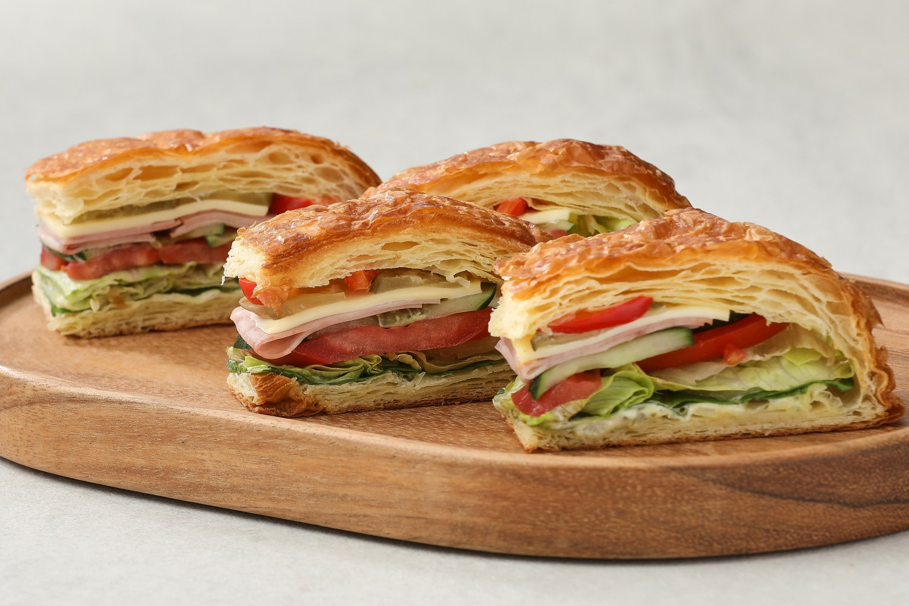

Best 3 런치 샌드위치
기분 좋은 버터 향이 느껴지는 페스츄리를 사용한 샌드위치는 고소하고 풍미가 좋은 게 특징이죠.
짭조름한 햄과 치즈 그리고 다양한 채소를 가득 채워 알차게 만들었어요. 아삭한 식감의 채소가 넉넉히 들어있어 씹는 맛도 좋답니다.
타르타르소스가 다른 재료들과 조화롭게 잘 어우러져 씹을수록 적당한 단짠이 느껴져요.
은근 생각나는 런치 샌드위치. 근데 4개는 많은데 2개입 상품 만들어주세요.

영양정보
총 내용량: 210g · 1회 제공 칼로리: 455kcal
1회 제공량당 (% : 1일 영양성분기준치에 대한 비율) - 나트륨(mg/%) : 740/37 · 당류(g/%) : 10 · 포화지방(g/%) : 12/80 · 단백질(g/%) : 11/20
알르레기 정보
밀,우유,토마토,대두,계란,돼지고기,쇠고기 함유